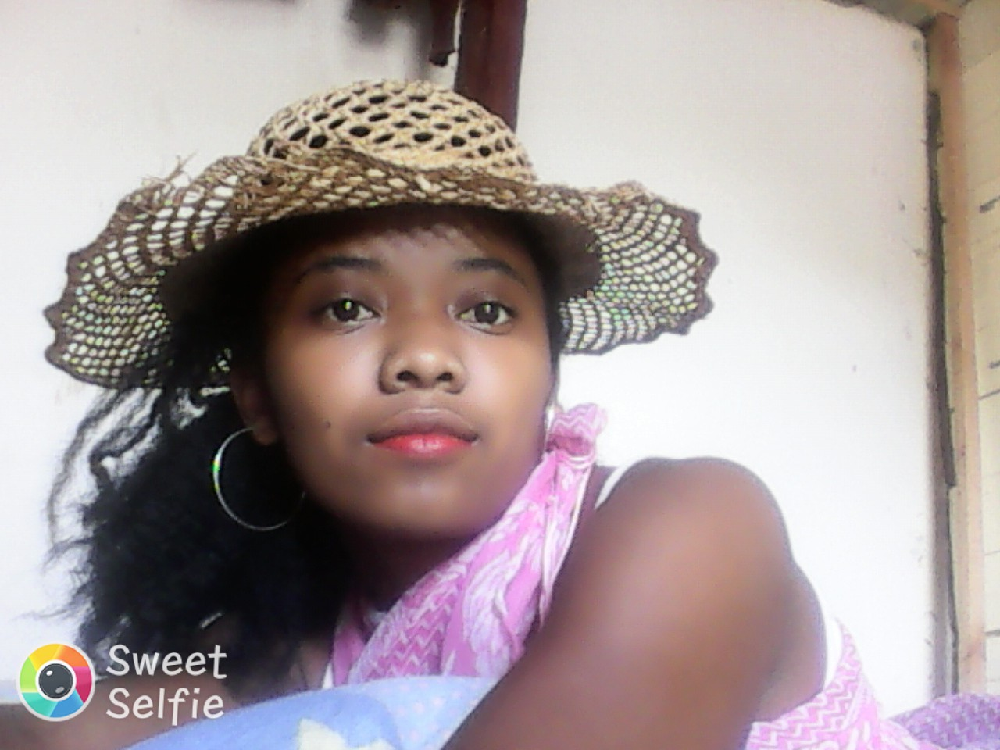

Do I have two mothers?
I am from Madagascar. I was born on 14th of September 1998 in a little village called Antokazo. When I was six months, my mum and my dad were separated. My mum had to live with her parents. She has seven brothers so she had to make money with them. They went to Andilamena which is really famous for gold. My grandmother took care of me and I thought that she is my mum. I took my real mum as my old sister . When I was ten years old, my mum's young brother fought with me. He said that "She is our mum but not yours. Angele is not your sister, she is your mum". I cried a lot and then my grandma explained to me my whole story. She said: " You are my great chid. Your mum is my daugther". Eventhough, I am not used to call Angele as my mum and I was not really sad when she was far away from me. One day, I was sick when my grandma left me. She went to visit her family. My grandpa was worried about me so he asked my mum's young brother to take me to my grandma. On the road he pinched me but I did not care because I wanted to see the person who I knew as my mum.